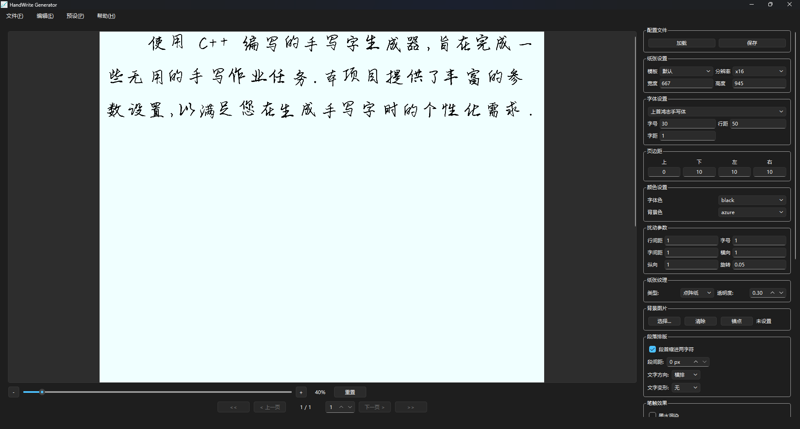

v2.6.1 · 开源 · 跨平台
把文字变成
真实的手写字
使用 C++ 编写的手写字生成器，提供丰富的参数设置与 GUI/CLI 双模式。
旨在让任何人都能快速生成以假乱真的手写文档。
C++17
高性能
Qt 6
原生体验
3 格式
PNG / PDF / SVG
GUI+CLI
双模式

使用 C++ 编写的手写字生成器，提供丰富的参数设置与 GUI/CLI 双模式。
旨在让任何人都能快速生成以假乱真的手写文档。

12+ 项参数随意组合，让每一次输出都更像真迹
支持自定义 TTF 字库，可叠加多套字体模拟混写效果，自动随机切换增加真实感。
内置横线纸、田字格、方格纸、点阵纸等多种纸张模板，可自定义纹理透明度。
支持任意背景图片作为纸面，可拖拽网格锚点贴合弯曲纸面，生成透视变形效果。
每个字符独立加入随机抖动 —— 大小、位置、旋转，模拟真实手写不规律。
对笔划边缘应用可分离最大值滤波，模拟墨水在纸上轻微洇开的视觉效果。
弧形 / 波浪 / 环形三种文字变形模板，让长段落自然弯曲，避免过于规整。
支持横排 / 竖排两种排版方向，古文、诗词等场景一键切换。
可配置划线删除概率与笔划粗细抖动，让作业看起来真的"写过又改过"。
CLI 提供批处理模式，从文件读取多段文本一次生成，自动跳过异常行。
同样的文字，从白纸到画报


四角定位 + 精细微调，让文字完美适配任意背景纸面


四步完成一次生成：从文本到纸张
从 ttf_library 加载喜欢的字体或自定义 TTF 文件。
纸张、字号、扰动、纹理、墨水等参数自由组合。
实时预览渲染结果，反复微调直到满意。
一键导出为 PNG、PDF 或 SVG 格式。
适合批处理、脚本自动化、远程服务器
# 从命令行参数生成 PNG handwrite-cli \ -t "今天天气真好。" \ -o "F:/out" \ -f png \ -r 2 # 输出 PDF / SVG handwrite-cli -t "..." -o out -f pdf
# 加载预设参数（字体、扰动、纹理等） handwrite-cli -i essay.txt -p my.conf # 从文件读取待生成文本列表 handwrite-cli --batch batch.txt # 支持从剪贴板读取 handwrite-cli --clipboard -o out
Windows 64-bit · 解压即用 · 包含 Qt 运行时与字体库